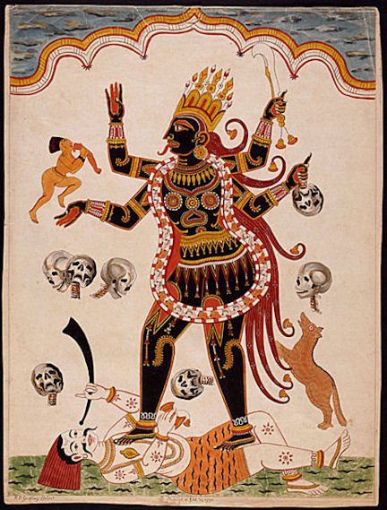

mailto:payer@payer.de
Zitierweise | cite as:
Payer, Alois <1944 - >: Sanskritkurs. -- 18. Lektion 18. -- Fassung vom 2008-12-08. -- URL: http://www.payer.de/sanskritkurs/lektion18.htm
Erstmals hier publiziert: 2008-12-08
Überarbeitungen:
Anlass: Lehrveranstaltungen 1980 - 1984
©opyright: Dieser Text steht der Allgemeinheit zur Verfügung. Eine Verwertung in Publikationen, die über übliche Zitate hinausgeht, bedarf der ausdrücklichen Genehmigung des Verfassers
Dieser Text ist Teil der Abteilung Sanskrit von Tüpfli's Global Village Library
Falls Sie die diakritischen Zeichen nicht dargestellt bekommen, installieren Sie eine Schrift mit Diakritika wie z.B. Tahoma.
Die Devanāgarī-Zeichen sind in Unicode kodiert. Sie benötigen also eine Unicode-Devanāgarī-Schrift.
नास्ति कामसमो व्याधिर्
नास्ति मोहसमो रिपुः ।
नास्ति क्रोधसमो वह्निर्
नास्ति ज्ञानसमं सुखम् ॥
Als adverbiales (nichtdeklinierbares) Vorderglied können
verwendet werden. Solche Tatpurua gehören meist zur Klasse der Nityasamāsa = नित्यसमास (m. "ständiges Kompisitum"), d.h. der Komposita, die man überhaupt nicht oder nicht nur mittels der im Kompositum selbst vorkommenden Wörter auflösen kann.
Beipiele:
अति "darüber hinaus":
अतिगुरु 3: überaus schwer, überaus gewichtig
अतिपुरुष m.: überragender Mann, Superman, Held
अतिस्तुति f.: übermäßiges Lob
अत्युक्ति f.: übermäßiges Sprechen, Übertreibung
Die wichtigsten adverbialen Vorderglieder sind a-/an-, su-, dus-.
अ (vor Konsonant), अन् (vor Vokal): un-: steht im Kompositum anstelle von न "nicht".
Beispiele:
अनृत n. = नर्तम् (= न + ऋतम्): Unwahrheit, Lüge
अकृत 3 = न कृत 3: nicht getan, ungetan
अब्रआह्मणी f. = न ब्राह्मणी : eine Nichtbrahmanin, Unbrahmanin
अदेव m. = न देवः : ein Nichtgott, Ungott
सु "wohl, gut"; wird bei der Auflösung des Kompositums von den Kommentatoren durch ein Adjektiv mit der Bedeutung "gut" (z.B. सुष्टु 3, शोभन 3) ersetzt.
Beispiele:
सुकवि m.: ein guter Dichter
सुकृत n.: gute Tat
सुखादित 3: gut gekaut
सुदुःख n.: großes Leid
दुस् "übel, schlecht" (Sandhi beachten!).
Beispiele:
दुर्नय m.: schlechte Führung, schlechtes Betragen
दुष्करण n.: schlechte Tat, schwierige Tat
Dabei gilt folgendes Gesetz:
| Lautveränderung von -s in Komposita Entgegen dem Satzsandhi gilt im Auslaut des Vorderglieds von Komposita: -s nach -i- oder -u- vor tonlosem Guttural oder Labial » -ṣ Deshalb: दुष्करण |
| Komposita vom Typ सुकर / दुष्कर haben
hauptsächlich die Bedeutung der passiven Möglichkeit: Beispiele:
|
Tatpuruṣa mit a- / an- können folgende Bedeutungen haben:
Folgender Vers fasst diese Bedeutungen zusammen:
तत्सादृश्यमभावश्च
तदन्यत्वं तदल्पता ।
अप्राशास्त्यं निरोधश्च
नजर्थाः षत्प्रकीर्तिताः ॥Man nennt sechs Bedeutungen von nañ (= a-/an-) ....
चन्द्रकीर्ति : प्रसन्नपदा S. 2 Zl. 14f. Durch ein Präverb wird die Bedeutung einer Wurzel gewaltsam verändert, so wie die Süße des Gangeswassers durch Meerwasser. |
| Verben können im Sanskrit mit Präverben (उपसर्ग m.) verbunden werden. Dabei gilt meist der Satzsandhi. Präverbe können die Bedeutung der Wurzel u. U. bedeutend modifizieren, sodass in vielen Fällen die Bedeutung einer Wurzel mit Präverb gesondert gelernt werden muss. Verben mit Präverb können einen anderen Modus (P, Ā) haben als die einfache Wurzel. Vor eine Wurzel können gleichzeitig mehrere Präverbe gesetzt werden. |
Einige wichtige Präverbe sind:
उप "zu, hin, gegen"
Beispiele:
उपगम् 1 उपगच्छति : hingehen, darangehen
उपदिश् 6 उपदिशति : hinweisen, belehren, anraten
उपपद् 4 Ā उपपद्यते : hingelangen
PPP उपपन्न 3: ausgestattet mit (Instrumentalis)
उपलभ् 1 Ā उपलभते : erfassen, erlangen
प्र "vorwärts, hervor"
Beispiele:
प्राप् (pra-āp) 5 प्राप्नोति : erlangen
प्रदिश् 6 प्रदिशति : zeigen
प्रबुध् 4 Ā प्रबुध्यते : aufwachen, erkennen
प्रभू 1 प्रभवति : hervorkommen, herausragen, Macht haben über (Gen., Lok. Dat.)
प्रवच् 2 प्रवक्ति PPP प्रोक्त (« pra + ukta) : erklären, mitteilen, aussprechen
प्रवद् 1 प्रवदति : aussprechen, bezeichnen als, erklären für
प्रस्तु 2 प्रस्तौति : preisen vor, laut preisen, auf etwas zu sprechen kommen, beginnen
वि "auseinander, weg, zer-, ver-"
Beispiele:
विगम् 1 विगच्छति : auseinandergehen, vergehen, verschwinden
विजि 1 Ā (!) विजयते : besiegen
विमुच् 6 विमुञ्चति : ablösen, befreien
विवद् 1 विवदति : disputieren, auseinandersetzen, erzählen
विस्मृ 1 विस्मरति : vergessen
विहन् 2 विहन्ति : zerschlagen, zerstören, vernichten
सम् "zusammen, mit"
Beispiele:
समास् 2 Ā समास्ते : zusammensitzen, sich aufhalten, wohnen
समि 2 समेति : zusammenkommen, sich vereinigen
संगम् 1 Ā (!) संगच्छते : zusammenkommen, aufeinandertreffen (freundlich oder feindlich), Geschlechtsverkehr haben mit (Akk.)
संजन् 4 Ā संजायते : entstehen
PPP संजात 3: geboren, entstanden, geworden
सम्बुध् 4 Ā सम्बुध्यते : vollständig erwachen (zur Wahrheit)
सम्पद् 4 Ā सम्पद्यते : jemandem zuteil werden, gelingen
PPP सम्पन्न 3: versehen mit (Instr.)
| Die Wurzel कृ "tun" zeigt in Verbindung mit den Präverben सम् । उप । अप । परि auch die Form स्कृ |
Beispiel:
sam-kṛ 8 संस्करोति : zubereiten, fürs Opfer zubereiten, weihen
PPP संस्कृत 3: fürs Opfer zubereitet ; संस्कृत n.: Sanskrit: die fürs Opfer geeignete Sprache ; Gegenstück प्राकृत 3: gewöhnlich, ordinär ; प्राकृत n.: gewöhnliche Sprache, Prakrit (Bezeichnung für die Volks- und Verkehrssprachen, die mit dem Sanskrit verwandt sind)
|
Von Wurzeln mit Präverben können mittels kṛt-Suffixen Nomina gebildet werden. |
Beispiele:
sam-kṛ + -a = संस्कार m.: Weihe, Zubereitung ; Übergangsrituale = Bezeichnung für die Zeremonien, die die verschiedenen Lebensabschnitte von der Empfängnis bis zum Tod begleiten (s. dazu die ausgezeichnete Zusammenfassung bei Basha, Wonder S. 160 - 170!)
Abb.: Hochzeit = विवाह् m., ein wichtiger संस्कारः
[Bildquelle: Saad.Akhtar. --
http://www.flickr.com/photos/saad/64770385/. -- Zugriff am 2008-12-08. --


 Creative
Commons Lizenz (Namensnennung, keine kommerzielle Nutzung, keine
Bearbeitung)]
Creative
Commons Lizenz (Namensnennung, keine kommerzielle Nutzung, keine
Bearbeitung)]
upa-nī + -ana = उपनयन n.: das Heranführen (ans Opferfeuer) = Zeremonie, bei der den männlichen Angehörigen der drei oberen Stände die heilige Schnur (यज्ञोपवीत n.) angelegt wird sowie der hl. Vers सावित्री ins Ohr geflüstert wird, den sie von nun an täglich bei Sonnenauf- und Sonnenuntergang rezitieren. Für die Brahmanen ist das Ṛgveda III.62.10:
"Mögen wir den vorzüglichen Glanz des Gottes 'Antreiber' empfangen, der unsere Gedanken in Bewegung setzen möge."
Durch das Upanayana geschieht die zweite Geburt, deshalb: द्विज । द्विजाति
Abb.: उपनयनम्
"A young boy is seen during upanayana ritual. The yellowed, thin, thread running from left shoulder to the waist is Yagnopaivta. Also note the girdle of munja grass around the waist. The twig in the right hand (usually from peepa treel) siginifies his entry in to Brahmacharya."
[Bildquelle: Nagesh Rao / Wikipedia, GNU FDLicense]
सुष्टु 3: hochgepriesen, ausgezeichnet, gut
शोभन 3: glänzend, prächtig, herrlich, schön, gut
सम 3: gleich, eben, ähnlich (mit Instrumentalis)
व्याधि m.: Krankheit
रिपु m. = शत्रु , Betrüger
वह्नि m. = अग्नि
ज्ञान n.: Erkenntnis
शूर 3: tapfer, heldenhaft ; m.: Held
शब्द m.: Laut, Ton, Signallaut: Wort
उदक n.: Wasser
अन्त m.: Ende, Grenze
आदि m.: Anfang
दण्ड m.: Stock, Prügel, Strafe
मात्रा f. मात्र n.: Maß, Begrenzung
सहित 3: vereinigt, versehen mit
हस्त m.: Hand
प्रभृति f.: Anfang
A) Übersetzen Sie das सुभाषित am Beginn der Lektion.
B) Übersetzen Sie folgende Tatpuruṣa:
१. सुकर ३
२. सुकुल n.
३. सुकृति f.
४. अकरण n.
५. दुरिष्ट n.
६. दुरिष्टि f.
७. सुखादित 3
८. दुष्कर 3
९. दुर्जय 3
१०. सुगत m.
११. सुजन m.
१२. दुरुक्ति f.
१३. दुरुपदेश m.
१४. सुजात 3
१५. सुगुरु 3
१६. अनाप्त 3
१७. अनीति f.
१८. अनीश्वरत्व n.
१९. सुदुःख n.
२०. दुर्जन m.
२१. दुर्दग्ध 3
२२. अतिकृत 3
२३. सुपुत्र m.
२४. सुबुद्धि f.
२५. दुष्पुत्र m.
२६. दुष्प्रणीत 3
२७. सुमति f.
२८. दुर्लभ 3
२९. दुर्वच 3
३०. दुर्वचन n.
३१. अमृत n.
Bitte keine Hilfsmittel benutzen!
A) Lösen Sie folgende Komposita in Sanskrit auf und geben Sie Übersetzungsvorschläge:
१. अन्तगत 3
२. क्षमाकर 3
३. क्षेमेन्द्र m.
४. शस्त्रकोपनिरोध m.
५. सिंहसंहनन n.
६. अरिसिंह m.
७. आहारनिद्राभय n.
८. मृतिसाधनी f.
९. कुलोपदेश m.

Abb.: मृतिसाधनी काली
1770 Print
[Bildquelle: Wikipedia, Public domain]
B) Übersetzen Sie unter Verwendung von Verben der 2. Präsensklasse:
1. Der Brahmane preist die Göttinnen.
2. Die Helden gehen auf dem schwer begehbaren Weg ins Dorf der Arier.
3. Die Hausmagd melkt die Kühe.
4. Die Feinde der Arier erschlagen die mächtigen Kṣatriyas.
5. Ein Gespenst isst keine Früchte.
6. So spricht der, der [den Weg durch die Wiedergeburten] gut gegangen ist zum Jünger.
Abb.: सुगतः
गन्धार 1./2. Jhdt. n. Chr.
[Bildquelle: Wikipedia, Public domain]
C) Geben Sie in Sanskrit die Definition von Yoga auf zwei Weisen: einmal unter Verwendung eines Kompositums, einmal indem Sie das Kompositum auflösen.
D) Übersetzen Sie:
(धर्मः) सर्वेषामाहिंसा सत्यं शौचमनसूयानृशंस्यं क्षमा च ॥
Zu Lektion 19